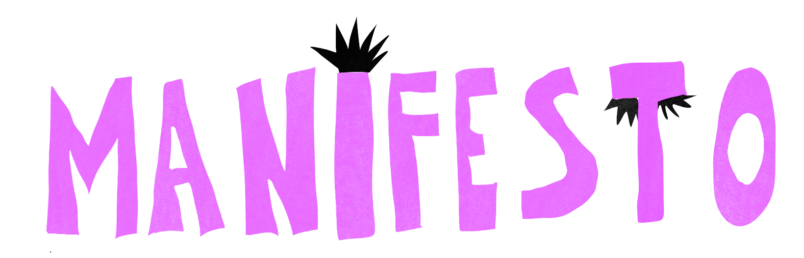

GALLERY 0 – THE FRAMEWORK // SETTING THE CONDITIONS
A place in KABK, by KABKers.
In an institution where individuality is the condition for studying,
we position community as a lens for practice.
Gallery 0 is shaped by the people who use it.
What happens here is defined,
and run by them.
We call it a gallery because it emerges from KABK,
where these
spaces already extend beyond the white cube.
Hosting gatherings, conversations, dinners, and celebrations,
Gallery 0 brings this condition into view,
Recognising it as a starting point for practice
and challenging what is recognised as practice.
Student presence is not absent in KABK.
It appears in spaces
without oversight:
toilets, basements, in-between areas.
Meanwhile, central spaces remain controlled, neutral,
and detached from those who use them.
Gallery 0 reclaims this
imbalance,
making student presence visible where it is usually suppressed.
An institution as the foundation.
A collective as the connection.
A platform as the release.
Not a space defined by walls,
but by the people who activate it.
We insist on the existence of Gallery 0.
Its absence is the
question.
And by insisting on it,
We turn the collective labour that is
usually invisible,
visible.
Gallery 0 maps what already exists
and curates the conditions for
it to transform.
A gallery becomes a kitchen
A kitchen becomes a protest,
A
protest becomes a conversation,
A conversation becomes a disagreement,
A disagreement becomes a new position.
It becomes what is
needed,
when it is needed.
It is made again,and again
until those who inhabit it decide
otherwise.